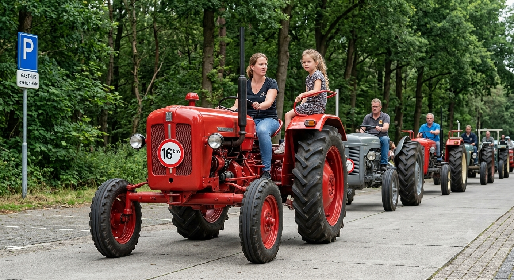

Oud ijzer dat
blijft draaien
Ruim 915 liefhebbers van oude tractoren en stationaire motoren. Samen houden we ze rijdend, en de verhalen erachter levend.
Sinds 1997 houden we het oude ijzer in beweging
In dat jaar reden een tiental vrienden uit Zederik voor het eerst samen uit. Inmiddels telt De Lange Slag ruim 915 leden en is het een van de grotere oude-tractorenverenigingen van het land.
We komen bijeen op puzzeltochten, toertochten, de Snertrit en de praatavonden. Zo blijven de trekkers die het naoorlogse platteland mechaniseerden bewaard, en rijden ze nog altijd mee.
Wat er speelt bij de club

Thema tocht gaat door
De thema tocht die voor zaterdag 27-06 op de planning staat gaat gewoon door. Verzamelen zoals gebruikelijk bij de loods.

Hooibouwdag verzet naar 4 juli
De Hooibouwdag in Lekkerkerk is vanwege de verwachte warmte verplaatst van 27 juni naar zaterdag 4 juli.

Oude film Landbouwdag 28 augustus 1998
Via de mail ontvingen wij prachtig oud filmmateriaal van de Landbouwdag uit 1998. Een mooi stukje clubgeschiedenis.
Aankomende ritten & dagen
Hooibouwdag Poldertuffers
Demonstraties van hooibouw met historische trekkers en werktuigen.
Toertocht Land van Maas en Waal
Tractorclub De Juiste Koers organiseert een mooie toertocht door het rivierenland.
HMT Historisch Festival
45ste editie van het grootste historische festival, op 25 en 26 juli.
Najaars praatavond
Gezellige avond om kennis, onderdelen en sterke verhalen uit te wisselen.